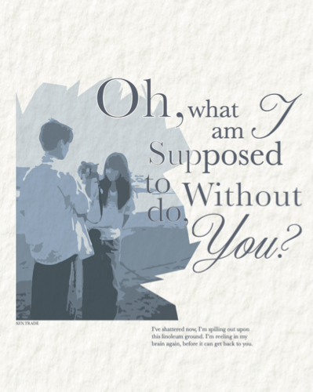

Process

Mr-Loverman
2024, Digital, 15 in x 18 in
This poster was designed to showcase my number one song. I have listened to it for years but for the 2024 year, I listened to the song a total of eight hundred and fifty-one times.
The illustration is from a popular drama titled "When I Fly Towards You" to where a blue-tone represents the show's color scheme very well. I wanted to play with the typography layout using the bridge lyrics. The edges of the photo were created using only star shapes and overall for my favorite song, this poster serves it justice.